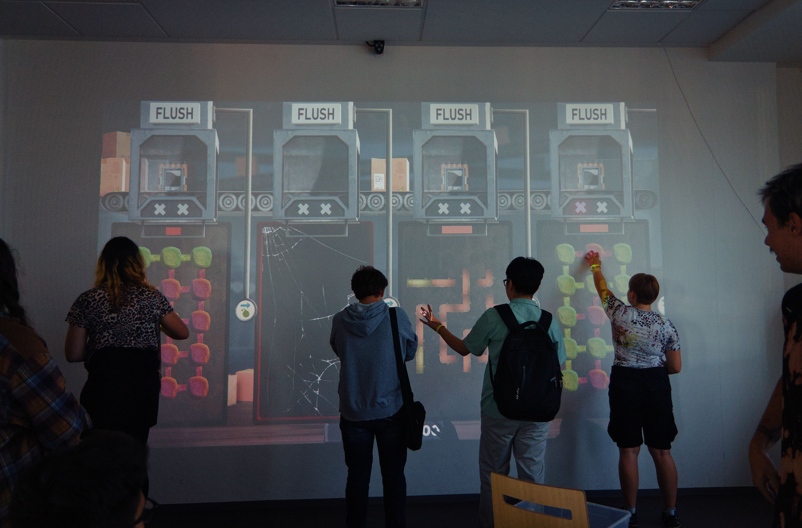
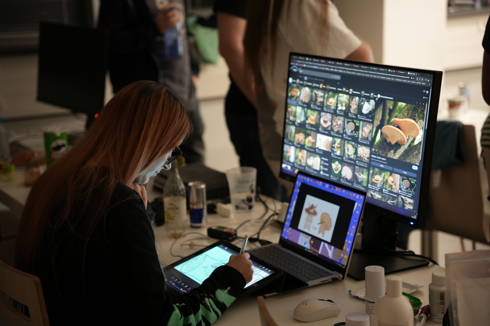
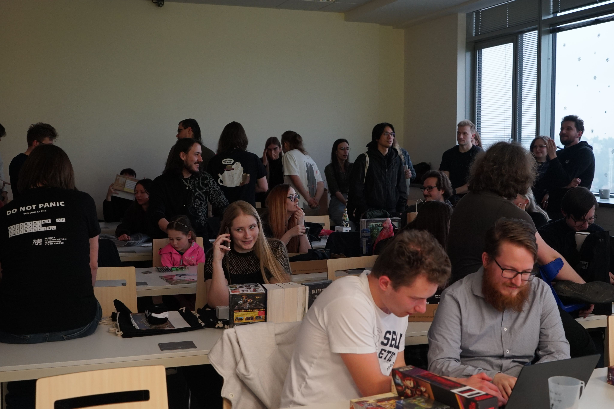

Visualisation and recognition
Rendering, image data, dynamic textures, interactive visualisation and new ways of working with images.
graphic · game design · generative arts
A place where computer graphics, game design and digital art meet. We support student projects, teaching, research and community events.

Three directions, one facility
ggLab is where several FIT CTU teaching and research topics intersect. A project may be technical, creative — and very often both.
Rendering, image data, dynamic textures, interactive visualisation and new ways of working with images.
Game mechanics, prototyping, engines, level design and teamwork from a game jam to a thesis project.
Creative coding, audiovisual experiments, physical interfaces and work at the intersection of technology and art.
What happens here
It is also a community built around talks, workshops, intensive courses, student exhibitions and collaborative game creation.
Informal talks, workshops, creative contests and student showcases about graphics and design, open to students and the public.

Daniel Tripplet's practical block combined Unreal Engine, Blender basics and 3D scanning, including using scanned assets in a scene. We expect a similar format next year.

An exhibition platform for games, interactive installations, animation, visualisation and work created in graphics courses.

An intensive team event where programmers, artists, designers and sound creators meet and build a playable prototype within a few days.
Experimental equipment
The equipment supports teaching, theses, research prototypes and external collaboration. Current availability must be arranged in advance.
Large-scale multi-user touch surfaces for public installations, experimental games and research.
A physical tactile interface for experiments in unconventional image representation and interaction.
XTAL, HTC Focus 3, HTC Elite and Oculus Quest 2 for developing, testing and presenting immersive applications.
Projects and teaching
Course projects, theses and short experiments can continue as public showcases, games, research prototypes or new collaborations.
Study in depth
The master's specialisation combines graphics, image processing, visualisation, game engines, VR/AR, game design and recognition.
Explore the full curriculum →See the results
The gallery presents games from courses and game jams as well as projects spanning rendering, interaction, visualisation and digital creation.
Open the student game gallery →Contact and collaboration
Briefly describe what you want to build or validate, what equipment you need and whether this is teaching, a thesis, research or an external collaboration.